공지사항.
제목을 누르면 본문이 펼쳐집니다.
고정행사 안내2026-2학기 전공박람회 KELI 사무국 체험 이벤트 「나에게 딱 맞는 한림 AI 찾기」
11월 18일(수) 전공박람회 KELI 사무국 부스에서 이음이·이루미와 함께 1분 만에 나에게 맞는 한림 AI 서비스를 찾아보세요.
참여하신 분께는 소정의 상품을 드립니다.2026.11.11
- 2026. 11. 18.(수) 10:00–16:30, 레크리에이션센터 3층 전공박람회 KELI 사무국 부스에서 체험 이벤트를 운영합니다
- KELI 마스코트 이음이·이루미의 질문 5개에 답하면 나에게 맞는 한림 AI 서비스를 1분 만에 추천해 드립니다
- 사전 신청 없이 현장에서 바로 참여할 수 있으며, 참여하신 분께는 소정의 상품을 드립니다(1인 1회)
- 일시
- 2026. 11. 18.(수) 10:00–16:30
- 장소
- 한림대학교 레크리에이션센터 3층, 전공박람회 행정부스 KELI 사무국(AI교육확산센터) 부스
- 대상
- 한림대학교 신·편입생, 재학생, 휴학생
- 참여
- 사전 신청 없이 부스 현장에서 바로 참여 · 약 1분 소요
- 문의
- KELI 사무국 033-248-3242 / contact@keliedu.org
한림대학교 KELI 사무국(AI교육혁신원 AI교육확산센터)이 융합교육지원센터가 주관하는 2026학년도 2학기 전공박람회에 참가해, 한림대학교가 직접 개발하고 실제 수업에서 활용하는 AI 교육 서비스 HAI Ecosystems를 재학생 여러분께 소개합니다.
부스에서는 KELI 마스코트 이음이와 이루미가 진행하는 터치스크린 체험 「나에게 딱 맞는 한림 AI 찾기」가 운영됩니다.
다섯 가지 질문에 답하면 HAI-Tutor, HAI-GPT, HAI-Way 등 한림 AI 서비스 가운데 나에게 맞는 서비스를 추천해 드립니다.
공강 시간에 가볍게 들러 주세요.
참여 방법
- 학번 입력 — 부스 화면에서 학번을 입력하고 개인정보 수집·이용에 동의합니다.
- 질문 5개 응답 — 이음이·이루미의 질문에 답하면 나에게 맞는 한림 AI 유형과 추천 서비스가 나타납니다.
- 인스타그램 팔로우 — 결과 화면의 QR로 KELI 인스타그램(@hallym_keli)을 팔로우합니다.
- 상품 수령 — 결과 화면과 팔로우 화면을 부스 스태프에게 보여 주시면 소정의 상품을 드립니다(1인 1회).
· 수집한 학번은 참여 확인, 상품 지급(중복 수령 방지), 참여 통계에만 사용하며 행사 종료 후 1개월 이내 파기합니다.
· 이번 체험 상품은 전공박람회 공식 기념품(전공 상담 4회 및 설문조사 완료 시 지급)과 별도로 KELI 사무국 부스에서 드립니다.
· 전공박람회 전체 안내: 한림대학교 홈페이지 공지 「2026학년도 2학기 전공박람회 개최 안내」(2026. 11. 5.)
· HAI Ecosystems 서비스 소개와 데모 영상: KELI Marketplace
· 일정과 내용은 주최 측 사정에 따라 변경될 수 있습니다.
· 문의: KELI 사무국 033-248-3242 / contact@keliedu.org
고정일반KELI Alliance 출범 · 브랜딩 영상 공개
KELI 사무국이 제작한 KELI Alliance 출범 브랜딩 영상(41초)을 공개합니다.
허가 없는 복제·배포·편집은 저작권법에 따라 금지됩니다.2026.11.09
- 2026년 10월 20일 KELI Alliance 출범에 맞추어 KELI 사무국이 기획·제작한 브랜딩 영상(41초)을 공개합니다
- "한림대학교의 AI 교육 경험이 다른 대학으로 이어지는 AI 교육 플랫폼, 더 넓은 세상으로" — KELI가 지향하는 연결과 확산의 비전을 담았습니다
- 이 영상은 저작권법으로 보호되는 영상저작물입니다 — 허가 없는 복제·배포·전송·편집은 금지되며, 사용을 원하시면 사무국에 사전 허가를 받아 주세요
- 제목
- KELI Alliance 출범 · 브랜딩 영상
- 기획·제작
- 한림대학교 KELI 사무국(AI교육혁신원 AI교육확산센터)
- 길이·규격
- 41초 · 1920×1080(16:9) · 국문 자막
- 공개일
- 2026. 11. 9.
- 저작권
- © 2026 한림대학교.
All rights reserved.
영상 소개
"AI로 새로운 교육 — 한림대학교의 AI 교육 경험이 다른 대학으로 이어지는 AI 교육 플랫폼, 더 넓은 세상으로." 영상은 한림대학교가 개발해 수업에서 검증한 HAI Ecosystems가 강원을 넘어 전국의 대학으로, 다시 세계로 연결되는 과정을 빛의 네트워크로 표현했습니다.
마지막 장면의 KELI 로고와 "AI로 연결되는 새로운 교육(CONNECT)"은 KELI Alliance가 함께 만들어 갈 AI 기반 고등교육 혁신 생태계를 뜻합니다.
영상은 KELI 플랫폼 첫 화면과 KELI 소개 화면에서도 볼 수 있습니다.
심포지엄 현장 사진은 행사 사진 공지를 참고해 주세요.
저작권 안내 및 무단 사용 금지 경고
이 영상은 한림대학교 KELI 사무국(AI교육혁신원 AI교육확산센터)이 기획·제작하여 한림대학교 명의로 공표한 업무상저작물로서, 「저작권법」 제4조 제1항 제7호의 영상저작물에 해당하며 저작권(저작재산권 및 저작인격권)은 같은 법 제9조에 따라 한림대학교에 있습니다.
2. 금지되는 행위
저작권자의 사전 서면 허가 없이 이 영상의 전부 또는 일부를 다음과 같이 이용하는 행위는 「저작권법」이 정한 저작재산권(제16조 복제권, 제17조 공연권, 제18조 공중송신권, 제19조 전시권, 제20조 배포권, 제22조 2차적저작물작성권)과 저작인격권(제12조 성명표시권, 제13조 동일성유지권)의 침해로서 금지됩니다.
· 내려받기·화면 녹화 등 복제, 다른 사이트·SNS·동영상 플랫폼 업로드 등 전송·배포
· 자르기, 로고·자막·워터마크 제거, 음악·내레이션 교체, 다른 영상과 합성 등 변경·편집(2차적저작물 작성)
· 광고·홍보·강의 상품 등 영리 목적 이용, 타 기관·기업의 명의로 사용
· AI 모델 학습 데이터 등으로의 수집·이용
3. 위반 시 책임
위 행위를 한 자는 「저작권법」 제136조 제1항에 따라 5년 이하의 징역 또는 5천만 원 이하의 벌금에 처해지거나 이를 병과할 수 있으며, 저작인격권 침해는 같은 조 제2항에 따라 3년 이하의 징역 또는 3천만 원 이하의 벌금에 처해질 수 있습니다.
아울러 같은 법 제123조(침해의 정지 등 청구) 및 제125조(손해배상의 청구)에 따른 민사상 책임을 집니다.
한림대학교는 무단 사용을 확인하는 경우 게시 중단 요청, 형사 고소, 손해배상 청구 등 법적 조치를 취할 수 있습니다.
4. 허용 범위와 이용 허가 신청
개인이 이 페이지에서 시청하는 것과, 이 페이지의 주소(https://keli-aied.org/notice-n6.html)를 공유하는 것은 허용됩니다.
교육·보도·학술 등 목적으로 영상 파일이 필요하시면 KELI 사무국(033-248-3242, contact@keliedu.org)에 사용 목적·범위·기간을 적어 사전 허가를 신청해 주시기 바랍니다.
허가를 받은 경우에도 출처("한림대학교 KELI")를 표기하고 영상을 변경 없이 사용해야 합니다.
© 2026 Hallym University.
All rights reserved.
This video was planned and produced by the KELI Office (Center for AI Education Diffusion, Institute for AI Education Innovation, Hallym University) and is a cinematographic work protected under the Copyright Act of the Republic of Korea (Article 4(1)(vii); authorship vests in Hallym University under Article 9).
Without the prior written permission of the copyright holder, reproduction (including downloading or screen recording), distribution, transmission or uploading to any website or platform, public performance, alteration or editing (including removal of logos, captions or watermarks), commercial use, or use as AI training data of all or any part of this video is prohibited.
Infringement may be punished by imprisonment of up to five years or a fine of up to KRW 50 million (Article 136), and is subject to civil remedies including injunction and damages (Articles 123 and 125).
Viewing on this page and sharing its URL are permitted.
For permission, contact the KELI Office at +82-33-248-3242 or contact@keliedu.org.
(국문 요지: 이 영상은 한림대학교의 저작물로, 허가 없는 복제·배포·전송·편집·영리 이용·AI 학습 이용을 금지하며, 위반 시 저작권법에 따른 형사·민사 책임이 따릅니다.
이 페이지에서 보기와 주소 공유는 가능하며, 사용 허가는 사무국에 신청합니다.)
고정행사 안내2026 KELI 국제 심포지엄 및 데모데이 — 스케치 영상 · 행사 사진
10월 20일 서울드래곤시티에서 열린 KELI 국제 심포지엄 및 데모데이의 스케치 영상(2분)과 현장 사진 55장을 공개합니다.2026.11.09
- 2026년 10월 20일(화) 서울드래곤시티 그랜드볼룸에서 「2026 KELI 국제 심포지엄 및 데모데이」가 열렸습니다
- 개막식과 KELI Alliance 발대식, 기조연설, 세션 발표, HAI Ecosystems 데모데이가 하루 동안 이어졌습니다
- 행사 전체를 2분으로 담은 스케치 영상과 현장 사진 55장을 올렸습니다 — 사진은 누르면 크게 보고 원본을 내려받을 수 있습니다
- 일시
- 2026. 10. 20.(화) 09:30–17:00
- 장소
- 서울드래곤시티 3층 그랜드볼룸(서울 용산구 청파로20길 95)
- 주최·주관
- 한림대학교 · 주관 KELI 사무국(AI교육혁신원 AI교육확산센터) · AI에듀테크센터
- 주제
- AI로 연결하는 고등교육 혁신 생태계
- 문의
- KELI 사무국 033-248-3242 / contact@keliedu.org
한림대학교가 글로컬대학30 사업으로 추진하는 KELI(K-University AI EdTech and Learning Initiative)의 공식 출범을 알리고, AI 기반 고등교육 혁신의 비전을 국내외 대학·기관·기업과 함께 나눈 자리였습니다.
행사 내용과 자료를 외부에서도 볼 수 있도록 스케치 영상과 현장 사진을 공개합니다.
행사 진행
- 개막식 — 개회사(고영웅 한림대학교 AI교육혁신원장), 환영사(최양희 한림대학교 총장), 축사(윤희성 학교법인 일송학원 이사장)
- KELI Alliance 발대식 — KELI 비전 발표와 KELI Alliance 출범 선포, 참여 기관 기념 촬영
- 기조연설 — The Future of the University · 오세정 서울대학교 前총장
- 세션 발표 — HAI Ecosystems 소개, 국내외 수업 혁신 사례, Global EdTech 혁신 사례(동시통역)
- 데모데이 — HAI Ecosystems 시연·체험, KELI Marketplace 매칭 상담(10:00–17:00 상시 운영)
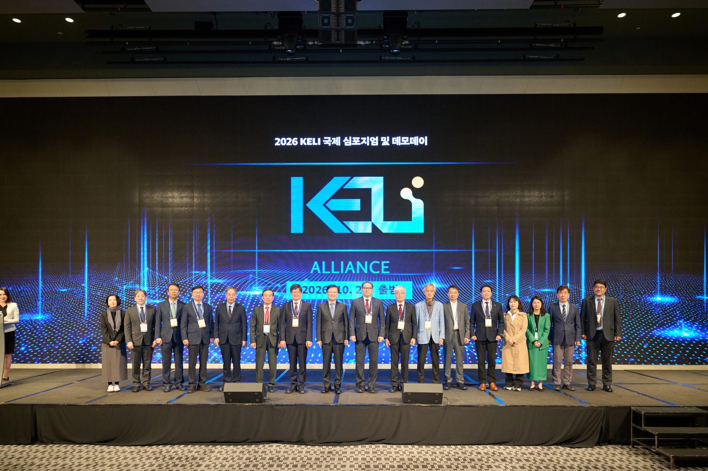
보도·홍보 목적으로 쓰실 때는 출처(한림대학교 KELI)를 표기해 주시고, 영상의 복제·배포·편집은 허가 없이 할 수 없으며(저작권 안내), 본인이 나온 장면·사진의 삭제를 원하시면 사무국으로 알려 주시기 바랍니다.
· 프로그램과 발표 자료: 행사 페이지 · 행사 전 안내: 개최 안내 공지
· 문의: KELI 사무국 033-248-3242 / contact@keliedu.org
행사 사진
행사 순서대로 정리했습니다.
사진을 누르면 크게 볼 수 있고, 좌우 화살표(키보드 ←→)로 넘겨 볼 수 있습니다.
크게 본 화면의 "원본 새 창"을 누르면 큰 그림을 내려받을 수 있습니다.
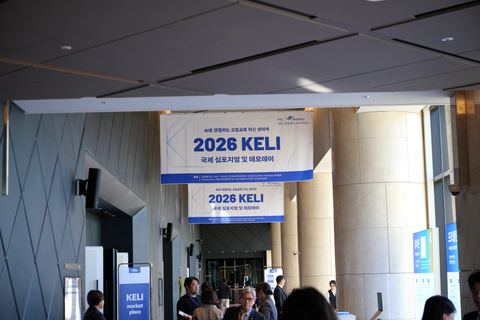
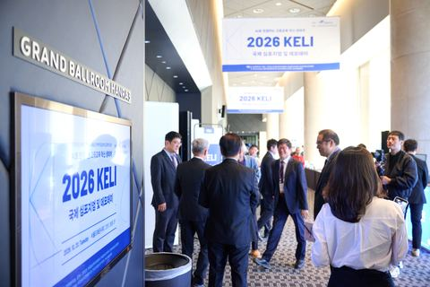
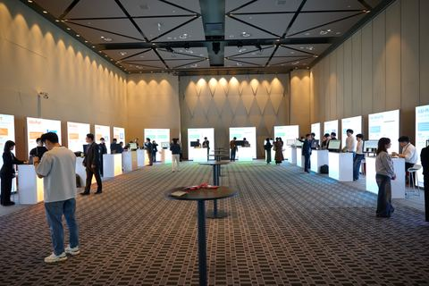
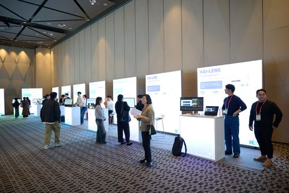
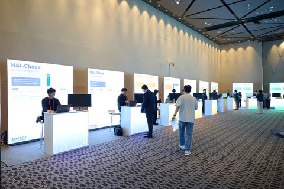
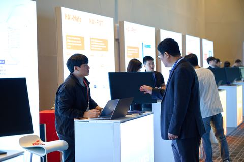
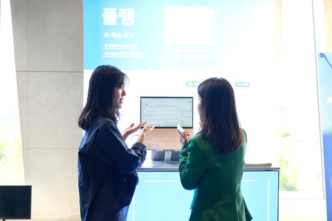
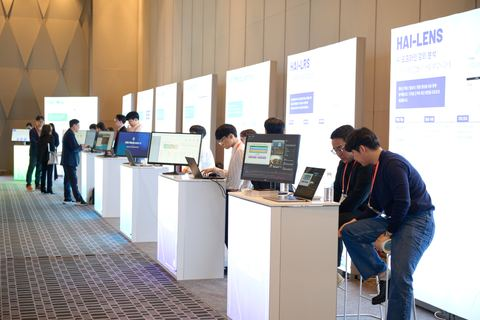
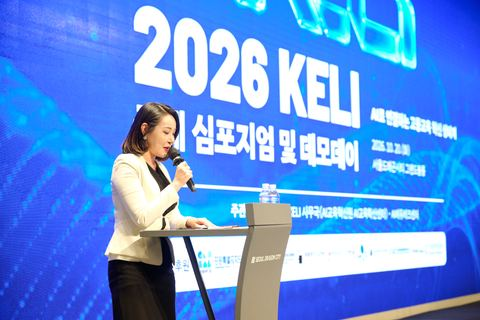
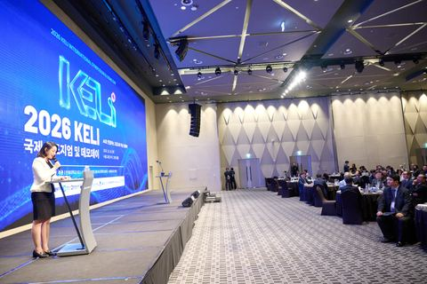
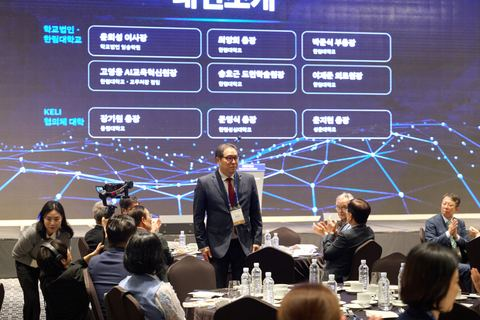
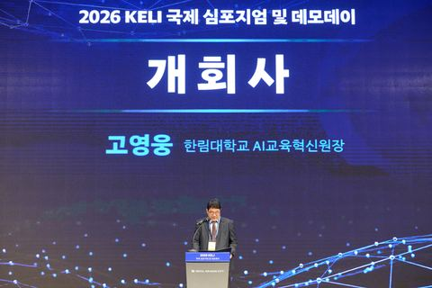
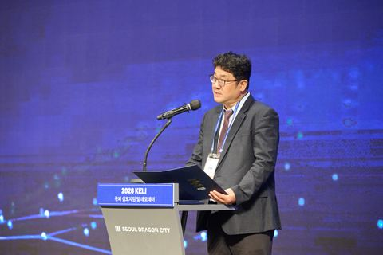
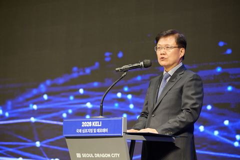
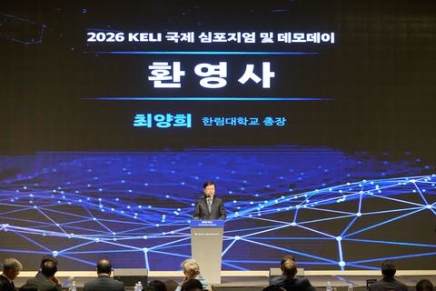
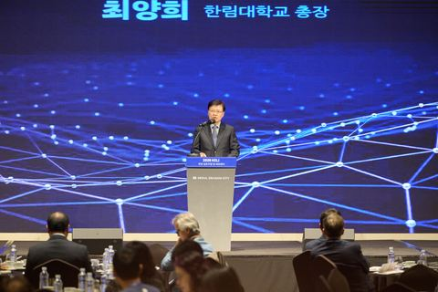
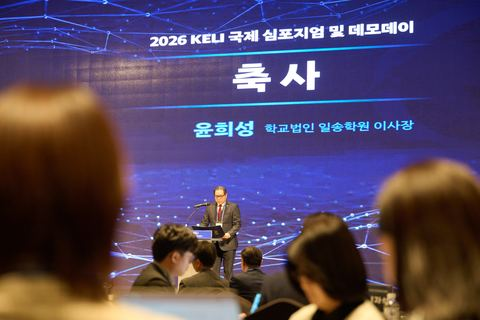
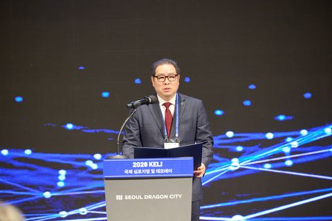
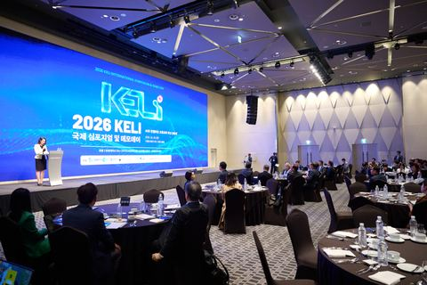
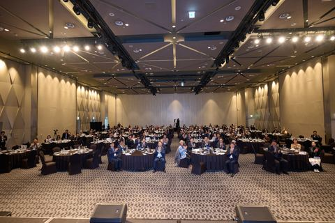
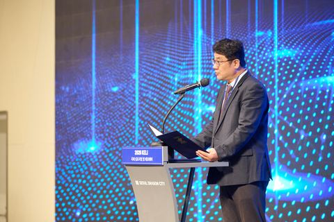
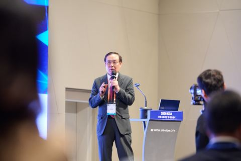
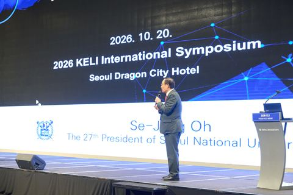
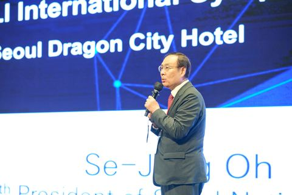
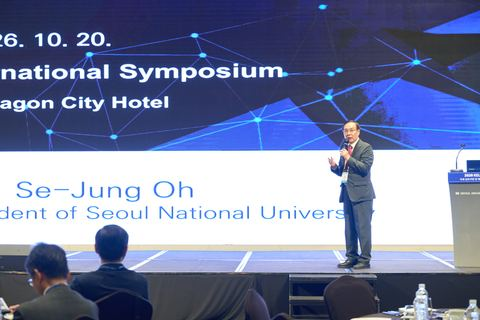
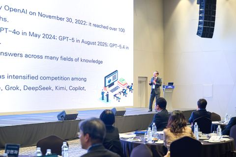
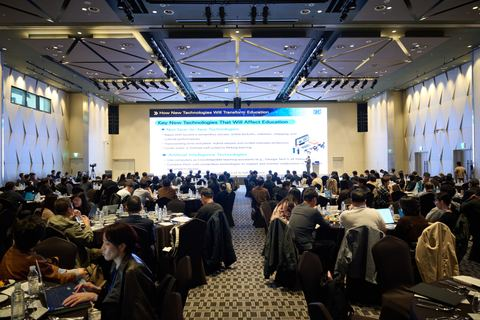
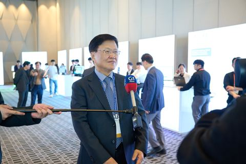
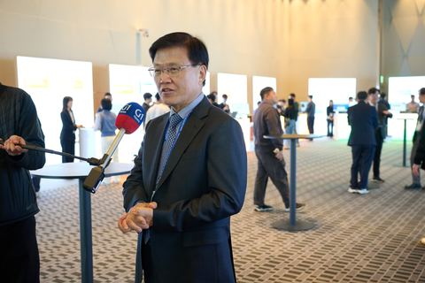
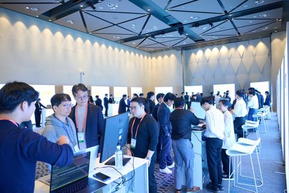
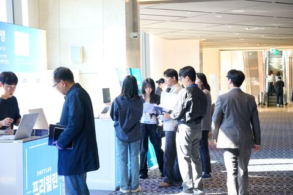
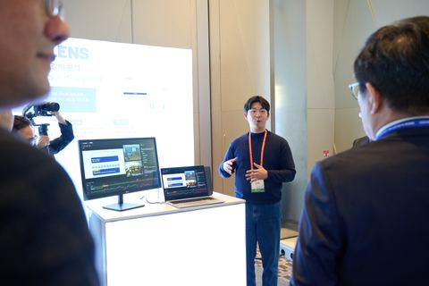
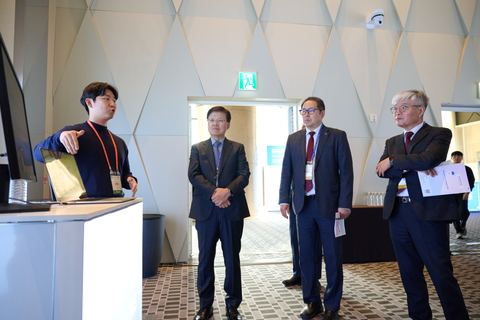
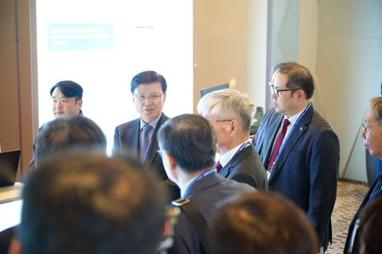
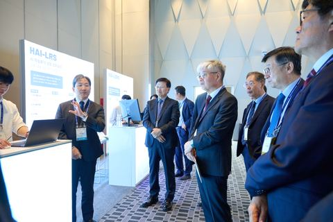
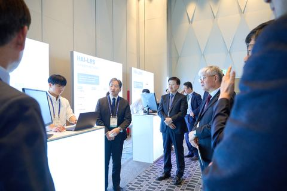
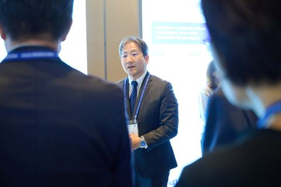
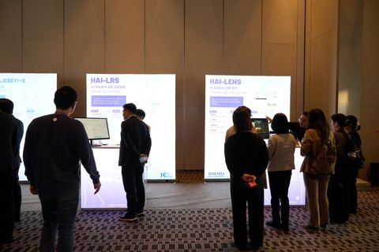
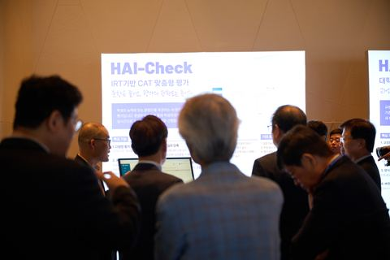
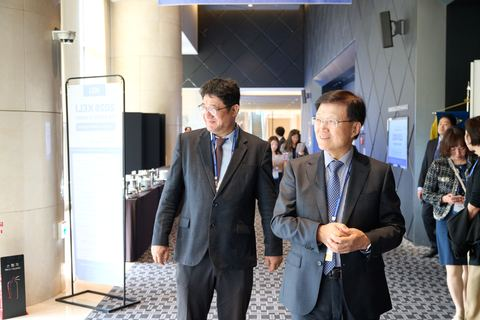
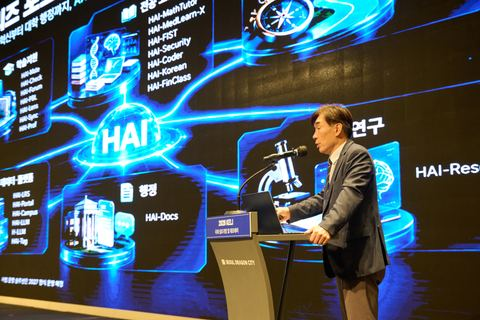
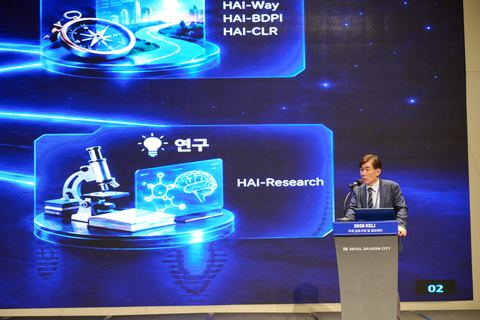
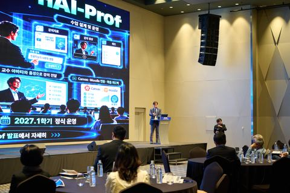
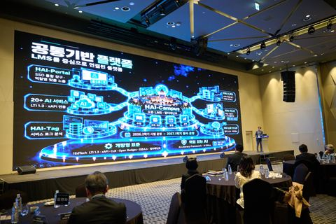
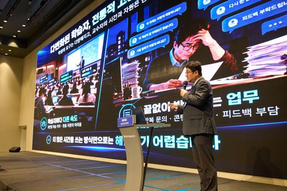
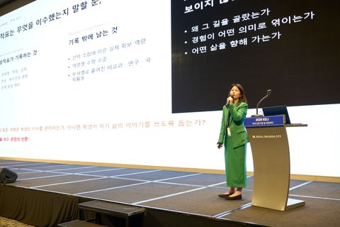
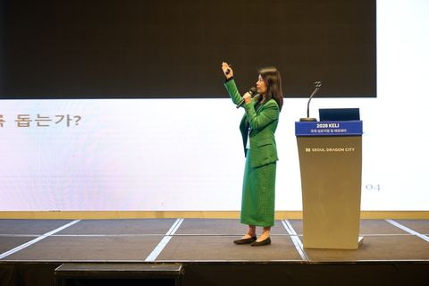
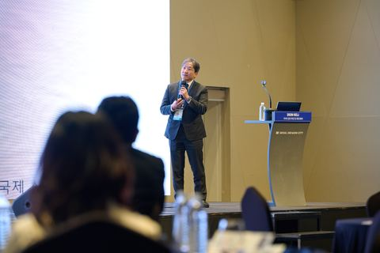
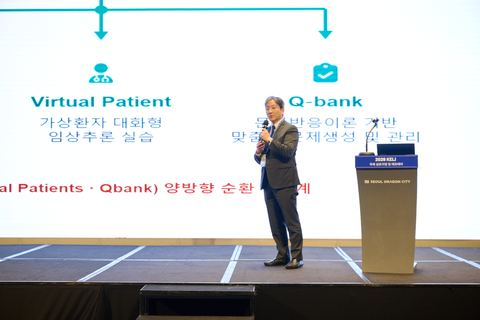
- 사진 55장 — 위 갤러리에서 누르면 크게 볼 수 있고, 크게 본 화면의 "원본 새 창"으로 내려받을 수 있습니다.
행사 안내2026 KELI 국제 심포지엄 개최 안내
AI로 연결하는 고등교육 혁신 생태계 — KELI 공식 론칭과 HAI Ecosystems 데모데이2026.09.10
- 일시
- 2026. 10. 20.(화) 09:30–17:00
- 장소
- 서울드래곤시티 3층 그랜드볼룸 (서울 용산구 청파로20길 95)
- 대상
- 대학 교원·교육 관계자, 에듀테크 기업·기관, 정부·공공, 학생
- 주최
- 한림대학교 · 주관 KELI 사무국(AI교육혁신원 AI교육확산센터)
- 참가
- 참가비 무료 · 사전 등록 후 현장 등록 가능
- 문의
- KELI 사무국 033-248-3242 / contact@keliedu.org
글로컬대학30 사업의 일환으로 KELI를 공식 론칭하고, AI 기반 고등교육 혁신의 비전과 추진 방향을 국내외 전문가와 함께 나누는 자리입니다.
안녕하십니까.
한림대학교 AI교육혁신원 KELI 사무국입니다.
「2026 KELI 국제 심포지엄 및 데모데이」는 'AI로 연결하는 고등교육 혁신 생태계'를 주제로 열립니다.
기조연설과 국내외 사례 발표를 통해 AI 시대 고등교육의 새로운 방향을 논의하고, 한림대학교가 직접 개발해 수업에서 검증한 AI 교육 서비스 HAI Ecosystems를 소개합니다.
여러 대학과 기관이 함께하는 KELI Alliance의 출범도 이날 선포됩니다.
프로그램
| 구분 | 내용 |
|---|---|
| KELI Alliance 발대식 | KELI 비전 발표 및 KELI Alliance 출범 선포 |
| 기조연설 | The Future of the University · 오세정 서울대학교 전 총장 |
| 세션 발표 | HAI Ecosystems 소개와 국내외 수업 혁신 사례, Global EdTech 혁신 사례(동시통역) |
| 데모데이 | HAI Ecosystems 시연·체험, KELI Marketplace 매칭 상담 (10:00–17:00 상시 운영) |
참가 안내
데모데이는 하루 종일 자유롭게 둘러보실 수 있으며, 서비스별 담당자가 현장에서 직접 시연하고 도입을 상담합니다.
프로그램과 발표 자료는 행사 페이지에서 볼 수 있습니다.
· 행사 전 데모 영상 미리 보기: 전체 데모 영상
· 문의: KELI 사무국 033-248-3242 / contact@keliedu.org